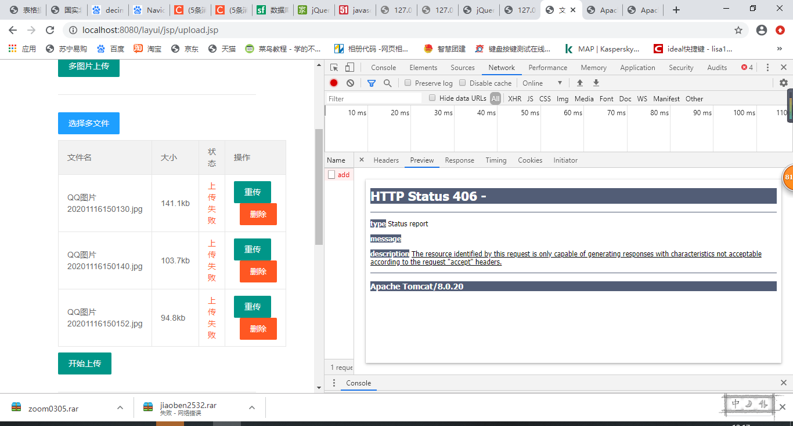
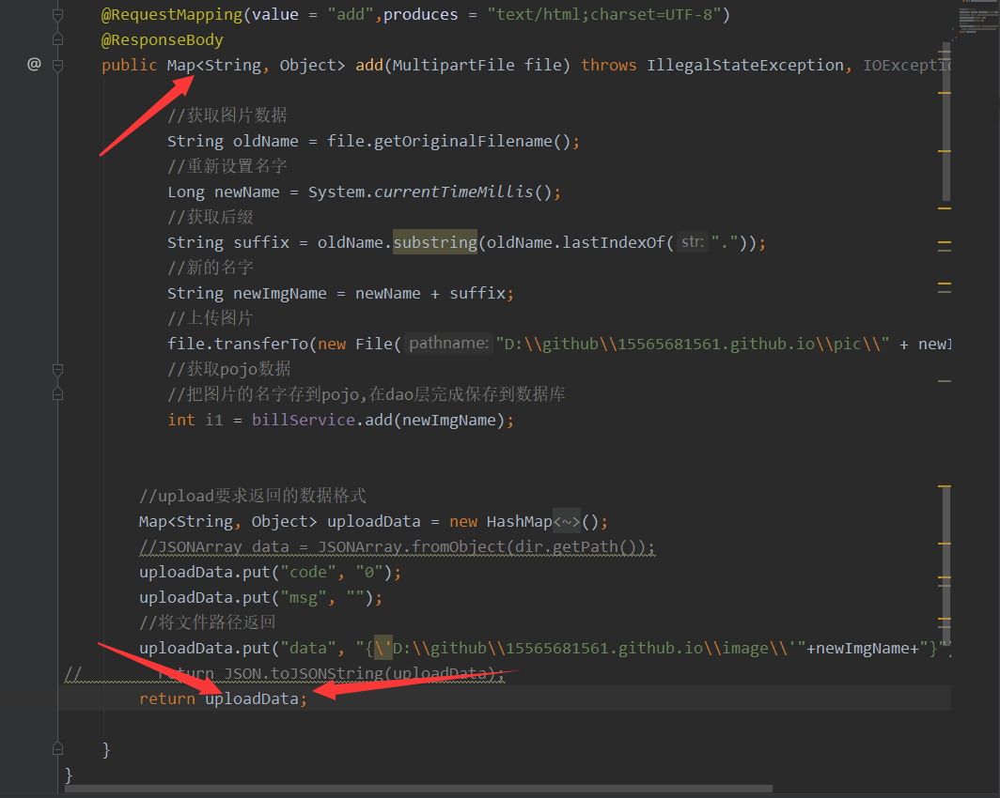
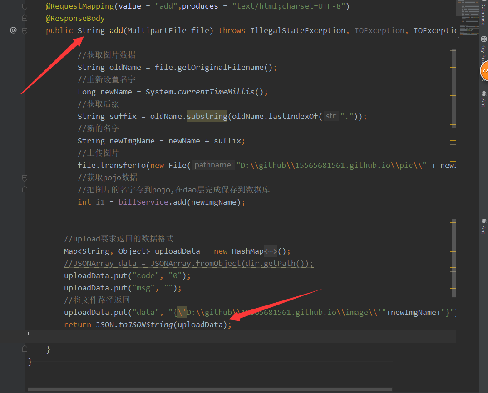
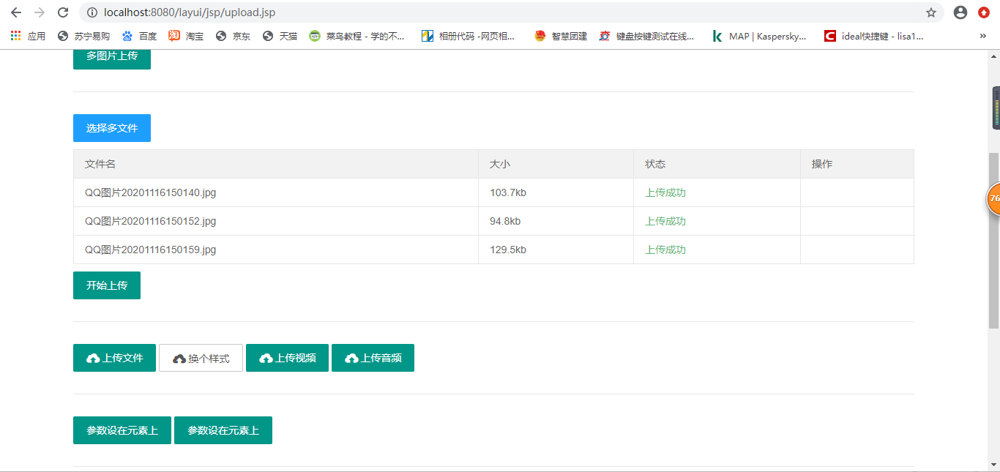

HTTP Status 500 - Request processing failed; nested exception is org.apache.ibatis.binding.BindingException:
Invalid
bound statement (not found): com.buba.test.sijiliandong.dao.SiftDao.getGuo


未找到getGuo（）这个方法，方法是有的，原因是mapper.Xml没有被加载
解决方法：
在pom文件中加
<build>
<resources>
<resource>
<directory>src/main/java</directory>
<includes>
<include>**/*.properties</include>
<include>**/*.xml</include>
</includes>
<filtering>false</filtering>
</resource>
</resources>
</build>
在用Layui上传图片的时候前端报错，控制台报406
HTTP Status 406 -
type Status report
message
description The resource identified by this request is only capable of generating responses with characteristics
not acceptable according to the request "accept" headers.

后来发现原因是传的类型不对,让返回JSON类型的数据，我返回的Map

解决方法：
把返回类型改成JSON

问题成功解决
